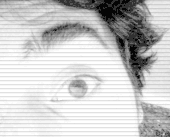

La première caméra de Bordeaux fête cette année ses 10 ans.
Son objectif initial : gèrer l'accès des voitures dans le centre piéton. Aujourd'hui, rejointe par 55 acolytes, la sécurité est sa première mission.
24/24h, 7/7j, Bordeaux est pris entre les 56 yeux du Centre de Vidéo Protection Urbaine (CVPU).
En binôme, les opérateurs guettent le moindre mouvement suspect sur leur mur d'écrans. Derrière leurs joysticks, ils baladent l'oeil de la caméra à 360° et peuvent zoomer jusqu'à près de 5 km.
En permanence, 4 prises de vues sont transférées en direct, aléatoirement ou non, vers les bureaux de la Police nationale. Mais aucun agent là-bas n'est particulièrement préposé au visionnage de ces séquences. En revanche, dès qu'un opérateur du CVPU repère une infraction ou un comportement suspect, il passe un coup de fil aux collègues de la Police.
Nous avons rencontré cette brigade composée de 11 agents dirigés par monsieur Eric Prebonneau qui nous a confié les chiffres de leurs opérations : les quartiers de la ville les plus chauds d'après leurs données, le nombre de réquisitions de bandes par la Police nationale et par la Police judiciaire. Mais aussi, le nombre de petits et grands voyous pris dans l'une des 56 mailles du filet.
Dans la course aux résultats, la capitale girondine peut se targuer de dépasser des villes très surveillées comme Nice ou Strasbourg, selon le numéro 1 de la Police municipale.
Cela ne prive pas Bordeaux d'envisager une augmentation de son arsenal vidéo. D'ici 2014, quatre à cinq appareils seront disposés dans un nouveau périmètre : la gare Saint-Jean, en pleine mutation pour devenir une escale de la nouvelle ligne TGV.
Pour installer une nouvelle caméra, il faut compter un an de réflexion et 5 à 10 000 euros d'investissements, sans compter les frais d'aménagement de tranchées et le travail de câblage.
Nous verrons si dans les prochaines années, ces nouveaux objectifs permettront de tracer quelques « buchettes » supplémentaires dans le palmarès des opérations du CVPU.


LIEN SOURCE 2
LIEN SOURCE 3
LIEN SOURCE 4